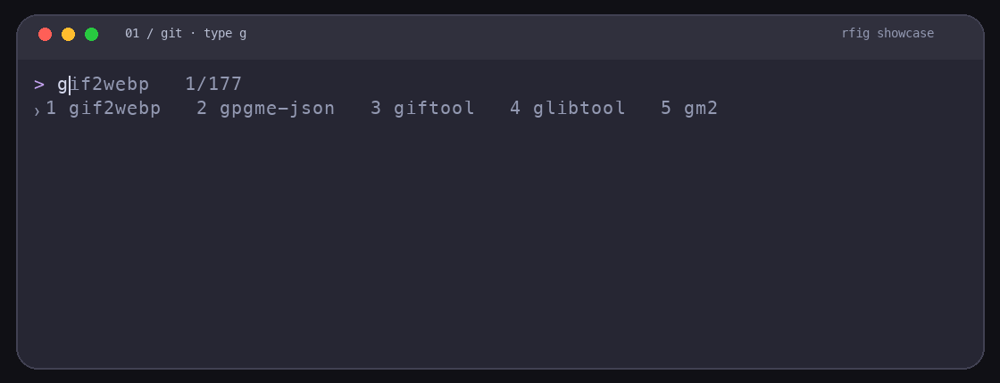

一条灰色推荐，加编号候选。
普通补全或当前目录历史匹配会作为灰色后缀出现在光标之后，下方彩色菜单逐行列出最多五条编号候选，候选与说明分列对齐。用 Command 加方向键或数字切换，按 Tab 填入但不执行。Enter 只执行实际输入。
zsh · Bash · Fish
开源终端自动补全 · 受 Fig 启发的独立项目
输入时显示一条安静的灰色内联推荐，并在下方用彩色菜单分列显示最多五条编号候选。用 Command 加方向键或数字切换，再按 Tab 插入。按目录匹配的历史建议共用同一推荐。
v0.3.1 支持 zsh、Bash 4.4+、Fish 3.6+。查看支持范围与系统要求 ↗
LIVE IN YOUR TERMINAL
无需切换窗口，也无需记住所有子命令。选中候选后继续输入，下一层自然出现。

↗ 输入 g、gi、git，继续进入 checkout，再用灰色内联推荐选择实时分支；动图同时展示 Brew、npm 动态候选、键盘选择、插入、执行和取消推荐。
BUILT FOR FLOW
把熟悉的终端留给你，把繁琐的记忆工作交给 rfig。
普通补全或当前目录历史匹配会作为灰色后缀出现在光标之后，下方彩色菜单逐行列出最多五条编号候选，候选与说明分列对齐。用 Command 加方向键或数字切换，按 Tab 填入但不执行。Enter 只执行实际输入。
优先使用当前 Shell 的补全定义，再结合可用脚本、协议和帮助缓存。分支、路径等候选随环境变化，多级能力取决于补全来源。
按命令上下文累计选择与执行记录，常用候选会更早成为内联推荐；紧凑的位置计数让其他推荐仍可切换。数据保存在本机。
输入 gi 时，git checkout master 可作为灰色内联推荐出现。Terminal.app 用户执行一次 rfig terminal-keys 后即可使用 Command+方向键和 Command+数字。
KNOW WHAT WORKS
v0.3.1 支持以下 Shell，可按需分别启用。
| 功能 | zsh | Bash 4.4+ | Fish 3.6+ |
|---|---|---|---|
| 灰色内联推荐与编号候选 | ✅ 已支持 | ✅ 已支持 | ✅ 已支持 |
| 按目录匹配的自动建议 | ✅ 已支持 | ✅ 已支持 | ✅ 已支持 |
| 常用排序、Command/Alt 与数字快捷键 | ✅ 已支持 | ✅ 已支持 | ✅ 已支持 |
当前源码支持 Linux x86_64 / ARM64。帮助探测使用 Landlock + seccomp，需启用 Landlock ABI 3+（通常为 Linux 6.2+）；不满足时保留现有补全和历史。Linux 安装包提供 x86_64 与 ARM64 两种架构，可从 Releases 下载。
使用 rfig setup --shell zsh 配置 zsh；将 Shell 名称换为 bash 或 fish 即可分别启用。配置完成后打开新会话，rfig 不会修改默认 Shell。
HOW IT WORKS
安装时扫描当前 PATH 中的可执行命令与常见补全目录。macOS/Linux 在可用沙箱中串行分析缺少规则的部分用户命令；动态候选仍按需查询。
选择 Homebrew、预编译包或源码安装。
按 $SHELL 或 --shell 写入集成；macOS Terminal.app 再运行 rfig terminal-keys 启用 Command+方向键。
光标后出现灰色推荐，下方显示编号候选；历史按目录记录。
GET STARTED
macOS 与 Linux 均可从源码安装。Linux 安装包按 x86_64 / ARM64 区分，要求 glibc 2.36+。Homebrew 和下载包以发布版本为准。macOS 自带 Bash 3.2 不支持。
brew install tamia6/tap/rfig
"$(brew --prefix rfig)/bin/rfig" setup
"$(brew --prefix rfig)/bin/rfig" terminal-keys安装 Tap 发布版本、启用 Shell，并为 macOS Terminal.app 添加 Command 键映射。
A FEW DETAILS
不需要。rfig 内置历史命令自动建议，可替代它的历史命令自动建议功能。请从 .zshrc 或插件管理器中移除旧插件的加载配置，再开启新会话。Fish 集成也会关闭原生命令自动建议，使用 rfig 的目录历史。
rfig 是受 Fig 启发的独立开源终端自动补全项目，与 Fig 无隶属关系，也不声称兼容 Fig 的全部功能或规范。
不保证。候选范围取决于本机可用的补全定义、脚本、生成器和帮助缓存。有些命令可能没有候选，或只能获得基于帮助文本的基础候选。
不会。补全、历史建议和使用排序均在本机运行，无需 AI 服务或云端账号。
不会自动导入缺少目录信息的旧 Shell 历史。命令扫描以当前 PATH 与常见补全目录为范围，不会遍历整块磁盘。历史、选择记录与缓存保存在 ~/.config/rfig/。
不会。Enter 只执行实际输入。用 Command 加方向键或数字选择，按 Tab 插入，再按 Enter 执行。Terminal.app 用户执行一次 rfig terminal-keys；不转发 Command 的终端仍可使用 Option/Alt。
支持。rfig analyze 按层使用 --help / -h 遍历声明的子命令，直到叶子节点，不限制固定层数；zsh、Bash、Fish 共用每条命令路径的缓存。探测在沙箱内串行执行并保留已有资源限制；重复父级帮助时停止该分支，失败节点保留旧缓存并报告。输入时不额外扫描帮助，动态资源名称仍需补全提供器。已知命令分组中的文件兜底或空结果会由帮助缓存补齐，叶子命令的原生动态参数仍保留。
命令可能没有可用补全定义，或后台分析尚未完成、被跳过或失败。可查看 ~/.config/rfig/enrich.status；done 只表示处理结束，不代表每个命令都成功。可用 rfig analyze <命令名> 单独刷新。Linux 若缺少 Landlock 或被容器限制，会明确提示无法探测，不会退回无隔离执行。
用更新后的 Homebrew 版本为每个 Shell 执行一次 setup，zsh、Bash、Fish 的集成脚本会链接到软件包的稳定 opt 路径。以后执行 brew upgrade rfig，打开新会话即可，无需再次 setup。旧的脚本副本需要这次迁移。建议只保留一种安装方式：旧的 ~/.local/bin/rfig 可能覆盖 Homebrew，请备份后移除该重复程序，历史和使用记录无需删除。
当前源码支持分别运行 rfig setup --shell zsh、rfig setup --shell bash 或 rfig setup --shell fish，再打开对应 Shell 的新会话。设置不会改变你的默认 Shell，各 Shell 的候选可能不同。